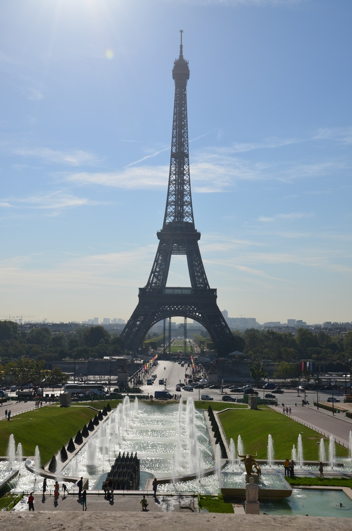
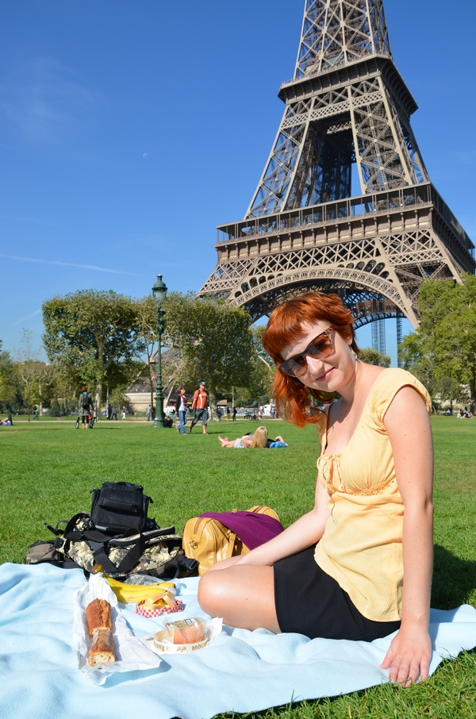
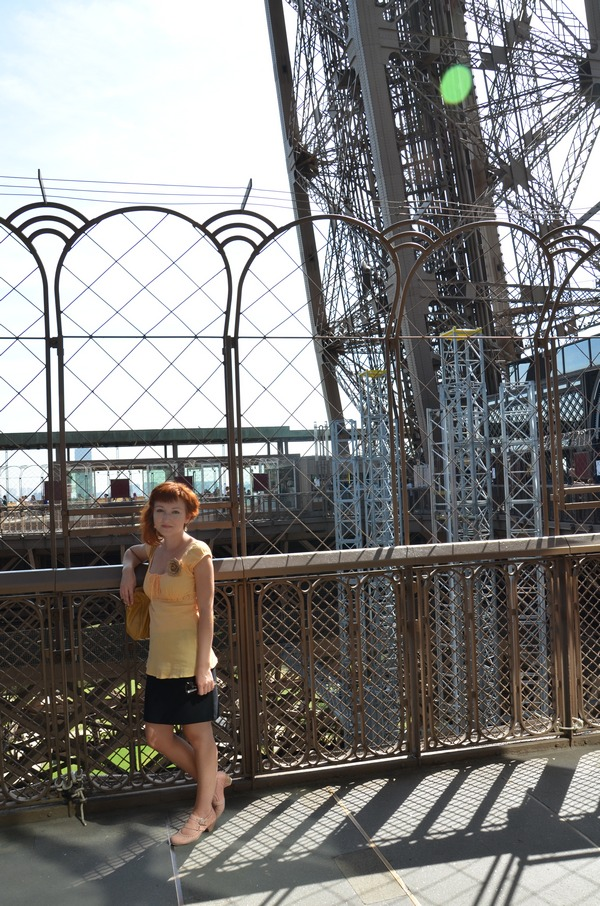

Hned na druhý den jsme si naplánovali atrakci, bez jejíž návštěvy bychom snad ani nemohli odjet domů. Pro mnohé je možná Eiffelovka pařížským klišé, ale věřte mi, že když ji člověk vidí na vlastní oči, je to docela silný zážitek. Za krásného slunečného rána jsme vyrazili na plácek nazvaný Trocadéro. Právě tady se před vámi objeví ten slavný obrázek, který znáte z pohlednic - Eiffelovka v celé své kráse. Hned na úvod mě překvapila její velikost, představovala jsem si ji tak poloviční.

První pohled na Eiffelovu věž
Poté, co jsme se prošli okolo obrovské fontány, zamířili jsme pomalu dolů k Seině. U slavné věže už se šikovala dlouhatánská fronta, ale ta nás v tuhle chvíli moc nezajímala. V našich žaludcích se totiž ozval hlad a my se nejprve potřebovali na ten výšlap nahoru posilnit. Vzali jsme si s sebou deku i jídlo, které jsme nakoupili předchozí den cestou od Pantheonu, a udělali si královskou snídani přímo pod Eiffelovkou :-)!

Snídaně v trávě
Zde by se možná hodila malá gurmánská odbočka. Zpočátku jsme měli docela obavy, jak se tady v Paříži budeme stravovat, jak to tady bude s obchody a cenami jídla. Naštěstí hned první den jsme objevili síť obchodů Monoprix, ve kterých seženete naprosto všechno, od jídla a pití přes drogerii až po oblečení a kuchyňské potřeby. A ceny jsou někdy až překvapivě příznivé i pro našince. V Paříži se dá také narazit na supermarkety Carrefour, které jeden čas fungovaly i v České republice. Ty mi, co se týče cen, přišly možná ještě o něco málo levnější. Sortimentem se od Monoprixů nijak výrazně nelišily. Nejčastěji jsme si tam kupovali pečivo, obložené sendviče, paštiky, sušené šunky a samozřejmě francouzskou klasiku: víno, olivy a sýry :-). Všechny tyhle potraviny se daly sehnat i za pár euro v luxusní kvalitě, což platilo především pro sýry a víno. Za peníze, za které bychom u nás dostali sotva krabicák, jsme si v Paříži užili skutečně lahodný mok :-).

V prvním patře Eiffelovky
Ale vraťme se zpátky pod Eiffelovu věž… Po snídani jsme si plácek před Eiffelovkou obešli a pořídili několik fotek, a poté jsme se konečně odhodlali stoupnout si na konec řady, která nakonec nebyla zas až tak dlouhá, jak se zprvu zdálo. Určitě jsme v ní nečekali dýl než půl hodiny. Přes security jsme taky prošli bez problémů a to dokonce i se švýcarským nožem v batohu. Zakoupili jsme si vstupenky do druhého patra (pro mlaďochy do 24 let je to se slevou) a vydali se na ten výstup. Protože už se mezitím sluníčko vyšplhalo pěkně nahoru a začalo pálit, byla to celkem fuška. Poprvé za naši pařížskou dovolenou jsem ocenila, že s sebou táhnu malou vodu ve spreji a co pár kroků jsem se jí osvěžovala. Podruhé jsem ji docenila na výletě ve Versailles, kde jsme si užili skutečně tropický den, ale o tom se tu jistě ještě dočtete. Výstup nás tedy celkem vyčerpal, ale ten nádherný výhled za to skutečně stál…


Vůbec nemám představu, kolik času jsme strávili nahoře na Eiffelovce focením, kocháním a rozjímáním, které další části Paříže musíme navštívit. Dolů nás vyhnala teprve žízeň. Prošli jsme se Martovými poli, v jejichž zadní části zrovna probíhal jakýsi festival, a zamířili směrem k Invalidovně. V přilehlé uličce jsme brzy objevili obchod, takže jsme uhasili žízeň a vydali se vstříc slavné Napoleonské hrobce. Přišli jsme asi třičtvrtě hodiny před zavíračkou, a proto se tady naštěstí žádná fronta nekonala. Stejně jako u spousty dalších památek v Paříži, i do Napoleonské hrobky mají studenti z Evropské unie do 25ti let vstup zdarma. I díky této možnosti jsme se během našeho pobytu podívali na spoustu zajímavých míst, kam bychom třeba normálně kvůli vysokému vstupnému nezavítali (a byla by to škoda). Další věc, která mě na Paříži a jejích památkách příjemně překvapila, byla možnost focení kdekoliv v interiérech - dokonce i v muzejích. Tomu také vděčíme za nějakých 1500 fotek, které jsme si z francouzské metropole přivezli :-).


Zdobný interiér Invalidovny určitě stojí za vidění. Mně osobně se líbil mnohem víc, než třeba strohý a ponurý Pantheon - ikdyž ten je zase hezčí zvenčí :-). K návštěvě nás nalákal také přilehlý park, odkud nás však záhy vyhnal četník, protože se areál večer zamyká. Do setmění zbývalo pořád ještě dost času, a tak jsme se zatoulali do jedné malebné uličky, kde jsme se rozhodli zjistit, co mají Francouzi pořád na tom vysedávání před kavárnami. No a jakým lepším způsobem to zjistit, než si před tu kavárnu s kávičkou sednou taky, že :-). Ulice byla plná malých obchůdků, pekárniček, kaváren a restaurací, květinářství, jídel všeho druhu a člověk nevěděl, kam se dřív podívat. Kolem neustále proudily davy lidí, a proto jsme byli rádi, že na nás zbyl jeden z posledních volných stolků před kavárnou, odkud jsme tento ruch mohli pozorovat a zároveň se stát jeho součástí. Venkovní stolky jsou ve francouzských kavárnách hrozně mrňavé, takže se vám na ně vejde akorát tak ta káva a karafa s vodou. Sousedi vedle nás si objednali i jídlo a museli jsme jim nabídnout, ať si jeden talíř odloží k nám, protože by se jim to tam všechno prostě nevešlo :D. Přestože mini kafe nás stálo každého zhruba 3 eura, francouzské kavárny jsou zážitkem, který by bylo škoda nechat si ujít - neopakovatelná atmosféra je v ceně :D…

U kafíčka jsme seděli asi hodinu, a poté už byl nejvyšší čas vyrazit zpátky k Eiffelovce, abychom si ji mohli vyfotit rozsvícenou. Opět jsme zakempili v Martových polích na dece, povečeřeli jsme v podobném stylu jako ráno, a to už se pomalu blížila celá a my zvědavě čekali, cože se tedy bude dít. No, každou celou se děje zhruba to, že se Eiffelovka rozzáří jako disko-koule. Mně osobně se ve tmě líbila víc bez těch blikajících efektů, ale turisti si na tu show asi potrpí :D…

Po tomto představení jsme se pomalu vraceli kolem Seiny zpátky ke Trocadéru, kde náš den původně začínal. A ano, je to prostě nejlepší místo k pozorování i focení Eiffelovky, ať už v noci či ve dne :-)…

Věřím, že po tomto článku už jistě musíte mít Eiffelovky plné zuby :D, ale my vůbec nelitovali, že jsme u této památky strávili prakticky celý den. Chtěli jsme si ji zkrátka užít. Naše další dny už pak samozřejmě nebyly tolik “jednotvárné”, ale o tom si tu budete moct přečíst zase někdy jindy… :-)

Komentáře (5)
Komentáře jsou uzavřené.